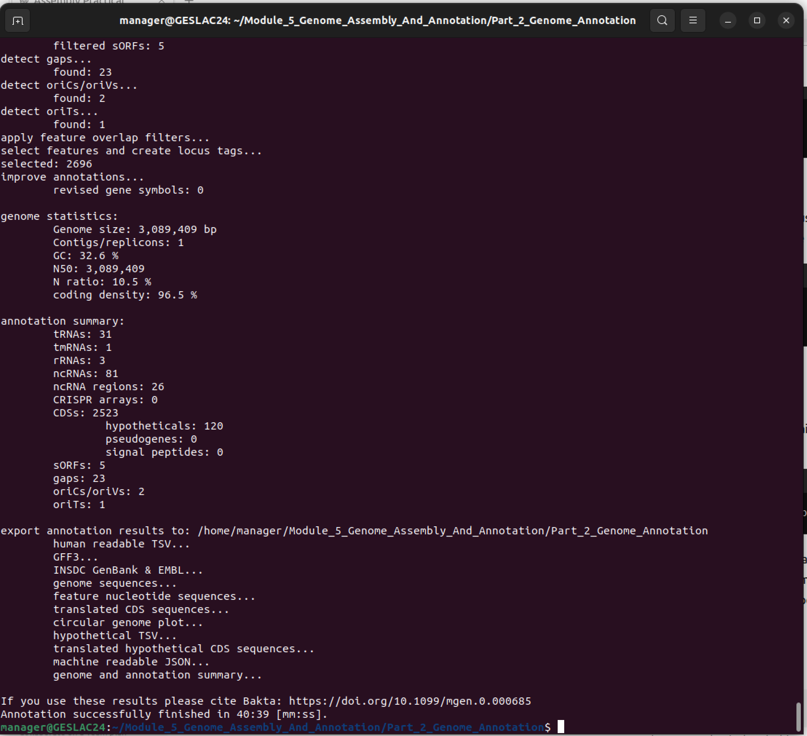
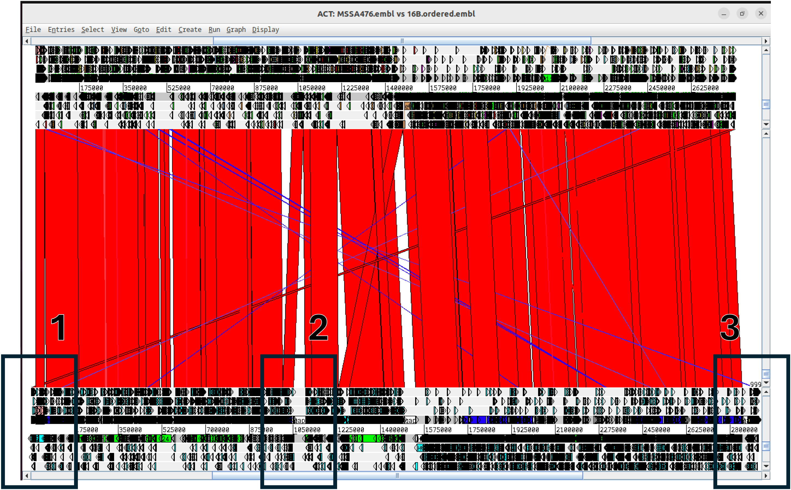
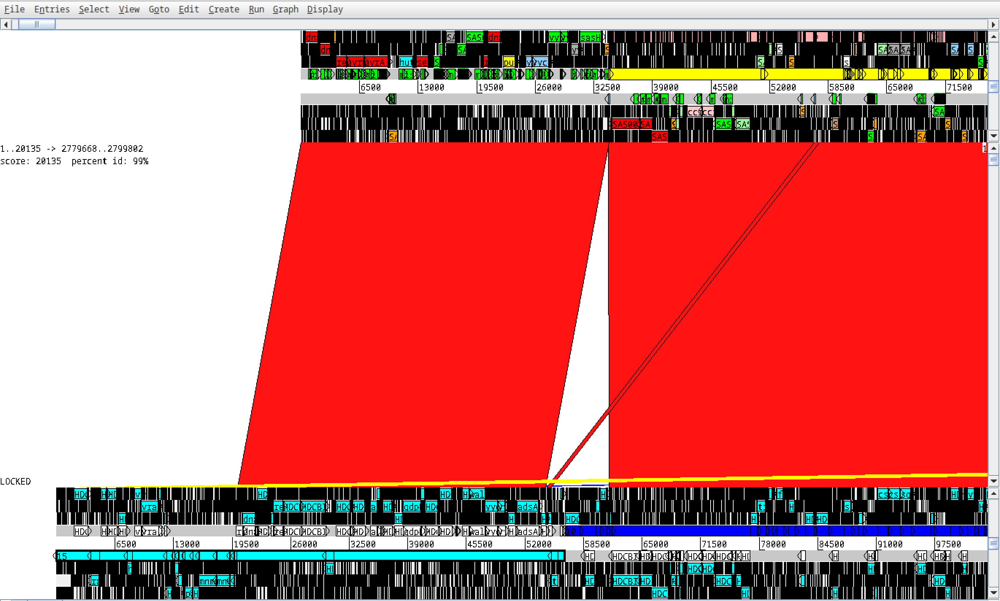
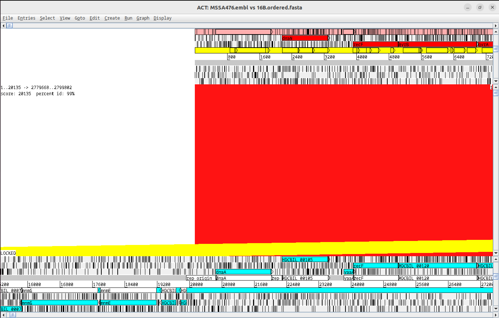
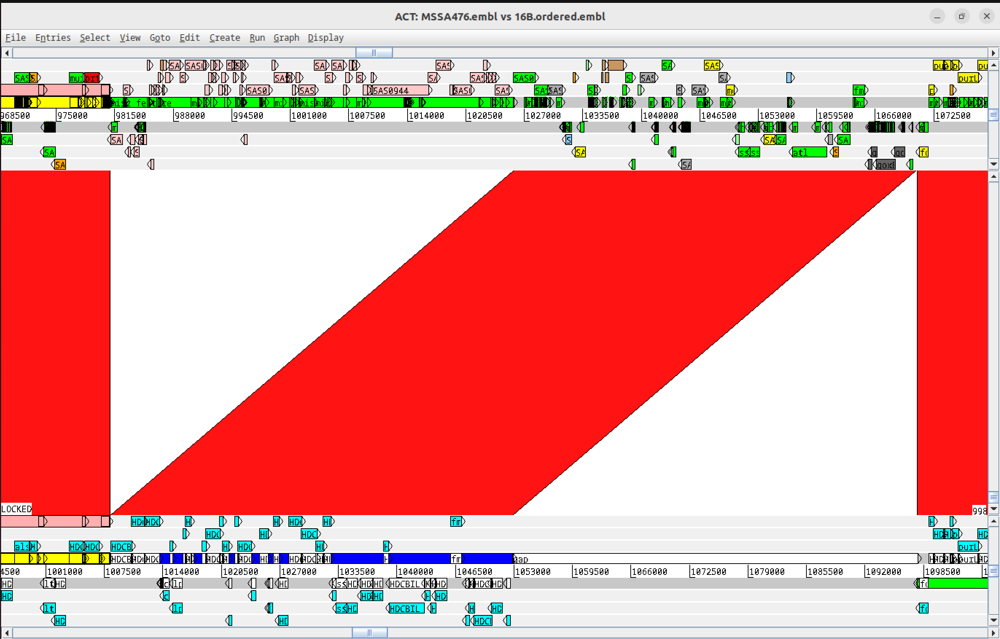
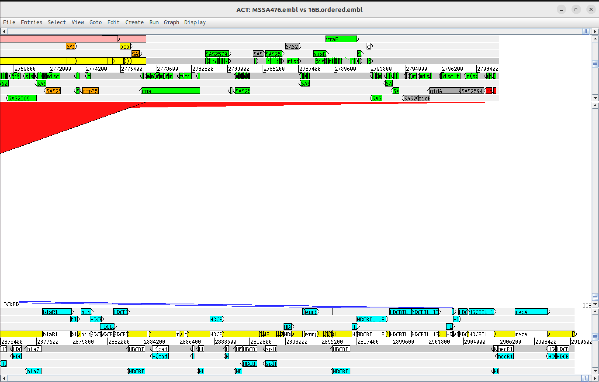
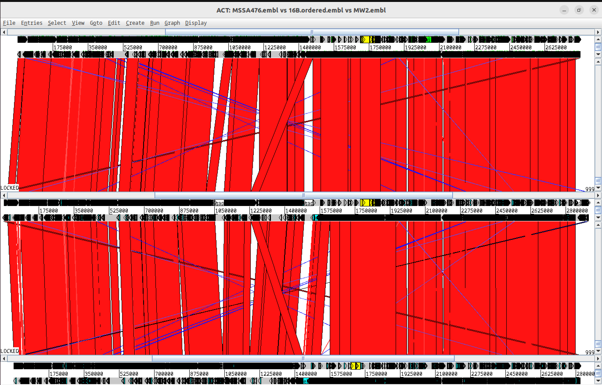
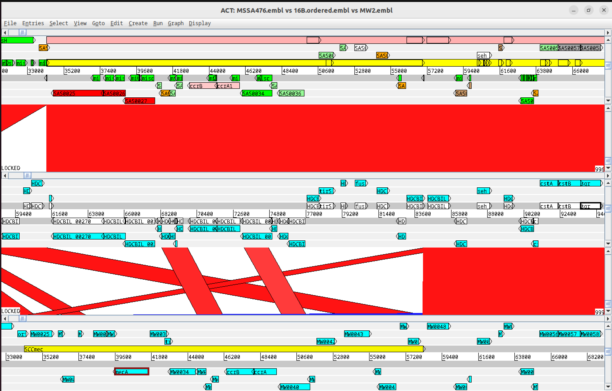
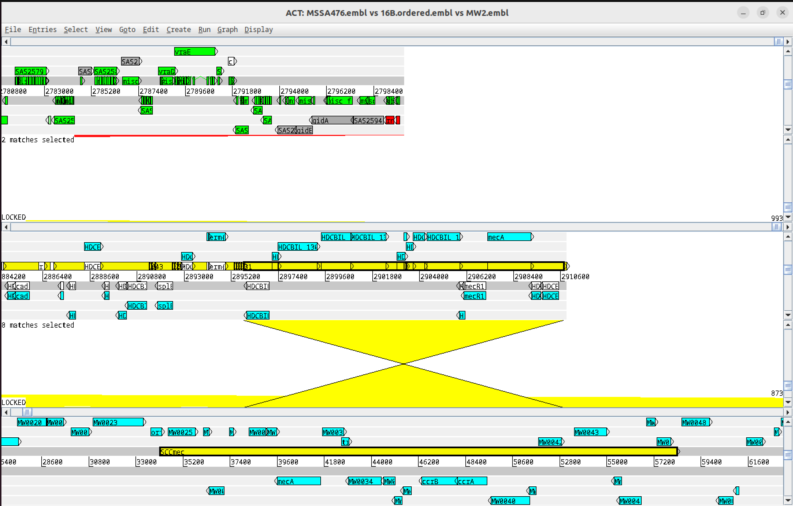

Annotation
Genome Annotation
There are a number of ways you can generate annotation for a novel sequence. You can manually annotate a sequence by curating the results of bioinformatic analyses of the sequence, but this is time consuming and prone to human bias. If there is a closely related reference sequence and annotation, you can transfer annotation by similarity matching, but this relies on there being a suitable reference. The fastest and most consistant way to generate annotation for novel sequence is to use an automatic annotation software such as prokka (Seemann T. (2014) Prokka: rapid prokaryotic genome annotation. Bioinformatics. 30:2068-9. doi: 10.1093/bioinformatics/btu153) or bakta (Schwengers O et al., (2021). Bakta: rapid and standardized annotation of bacterial genomes via alignment-free sequence identification. Microbial Genomics, 7(11). https://doi.org/10.1099/mgen.0.000685)
In this example, we are going to use bakta as this is a new tool that generates standardized, taxonomy-independent, high-throughput annotation.
Genomic annotation using bakta
bakta has been installed using conda. We must activate the relavent conda environment before running any commands using bakta.
conda activate bakta-envbakta uses a number of databases to annotate a genome. These databases are located in bakta_database/db-light. These have been updated for you.
Run bakta with the following commands to anotate the ordered assembly for 16B:
- Specify the database directory
--db bakta_database/db-light
- Specify the multifasta file to be annotated
16B.ordered.fasta
bakta --db bakta_database/db-light 16B.ordered.fastaThe first step of bakta is to annotate non-protein encoding regions including tRNAs, tmRNA, rRNA, ncRNA. It then predicts protein coding sequences and annotates these from match to proteins with predicted function, and includes annotation of hypothetical proteins with matches to protein domains. Matches to plasmids origins of replication are included where found and provides a summary of the genomic annotation.

You should now see 16B.ordered.embl in your directory
For more information on the annotation generated by bakta, the run options and the output it generates see here: https://github.com/oschwengers/bakta
We must now deactivate the bakta conda environment.
conda deactivateVisualizing the bakta annotation in act
bakta has generated a number of output files in different formats that contain the annotation for the 16B ordered assembly. We are going to use the EMBL format file and view it in act.
In act, open the 16B.ordered.embl file into the 16B.ordered.fasta entry by going to the File menu, and selecting the 16B.ordered.fasta option, and right clicking onto the Read An Entry option.

Region 1

In this region on the left hand side of the reference chromosome and near the origin of replication, you can see that the first contig spans the origin of replication and therefore matches two separate regions of the reference (left and right ends of the MSSA476 chromosome).

Region 2
In region 2, you can see a prophage in pink which has inserted into the MSSA476 genome which is not present in the genome of 16B. Next the this, there is a gap annotated by bakta on the 16B genome. This is a scaffolding error by abacas.

Region 3

In this region near at the right hand side of the assembly, we have the non-mapping contigs (yellow). Previously we have seen that the two largest contigs are likely to be separate plasmids.
Have a look at the annotation generated by bakta of the CDSs of the contigs in this region.
What sort of functions do the proteins in this encode?
Does the annotation confirm them as plasmids?
Can you find any genes of interest for antibiotic resistance that ariba identified?
Examining the evolution of drug resistance in ST1 S. aureus
Up until now we have compared the 16B assembly to only one other ST1 S. aureus strain, MSSA476. We are now going introduce another strain to the comparison, MW2, and start looking at the genetic differences between the isolates that may impact on their biology. Although MW2 was isolated in a different country (USA), many thousands of miles away from 16B and MSSA476 (both UK), it still belongs to the same clone, and probably share a common ancestor tens rather than hundreds of years ago. A clinically important phenotypic difference between these isolates are their antibiotic resistances:
- 16B – penicillin R, fusidic acid R , methicillin R , erythromycin R
- MSSA476 – penicillin R , fusidic acid R
- MW2 – penicillin R , methicillin R
As you will hopefully have just discovered, it is possible to use genome sequence data to find the genes responsible for antibiotic resistance. Examining the genetic context of these genes helps us to understand the mechanism that are driving the evolution of resistance in these S. aureus isolates. In this next part of the Module you are going use the comparisons with MW2 and MSSA476 to identify regions of difference regions that distinguish the isolates, and explain the differences in the antibiotic resistance phenotypes.
Before we begin this exercise close down any act session you have open.
Identify highly similar regions using blastn (MW2 vs 16B)
In order to examine the regions of difference in the 16B assembly with MW2 we are going generate a comparison file that we can load in ACT, as we did previously for MSSA476.
As before, run makeblastdb to format one of the sequences as a blast database, this time specifying our ordered asssembly as the input:
makeblastdb -in 16B.ordered.fasta -dbtype nucl -out 16B.orderedNext we run blastn with MW2.dna as the query, against the 16B.ordered database:
blastn -query MW2.dna -db 16B.ordered -out 16B.ordered.fasta_vs_MW2.dna.tsv -outfmt 6Comparing annotations of 16B vs MSSA476 vs MW2 in act
We are now going to load up the three sequences and relevant comparison files into act. You can do this either from the command line or by clicking on the ACT icon. If you prefer to do it from the command line you can type:
act MSSA476.embl MSSA476.dna_vs_16B.ordered.fasta.tsv 16B.ordered.embl 16B.ordered.fasta_vs_MW2.dna.tsv MW2.embl &Now that you have included the MW2 sequence to the comparison you should see an act view with three DNA panels and two comparison panels separating them. In this zoomed out view, MSSA476 is on the top, 16B is in the middle and MW2 on the bottom. You will also notice that in the act menu at the top there are now three entry options.

To help you with your investigations, we have also provided two additional annotation files that contain misc_features which mark the extent of MGEs identified in the MSSA476 and MW2 chromosomes. These can be loaded into the appropriate entry (from the menu click File, the entry you want, then Read An Entry). The misc_features are colour coded in the act view according to the type of MGE (see legend on on the circular diagram of MSSA476).

Go back to region 1, this time looking at the regions of difference between the three genomes. You shouod be able to find some MGEs highlighted in yellow on the MW2 and MSSA476 genomes.
What sort of functions do the proteins in this region encode?
Can you find any genes of interest for antibiotic resistance that ariba identified?
Does this region of MW2 share identity with regions of 16B located elsewhere in the assembly? Hint: Look at the transversion in the region which shares similarity to an unmapped contig
What has occurred in this region of the 16B chromosome that could explain the structure of this region in comparison to the other strains?

Compare the other regions containing MGEs.
How do these regions vary in the three strains, and what do they encode?
Does this explain the differences in the antibiotics phenotypes of the isolates?
Can you find any other important genes associated with MGEs that are vary in the isolates that are clinical relevant? (clue, think toxins)
Prokka Annotation
Basic Prokka run
prokka--outdir /home/ubuntu/analysis/annotation/sample1_prokka--prefix sample1--genus Staphylococcus--species aureus--strain sample1--cpus 4/home/ubuntu/analysis/assembly/sample1_unicycler/assembly.fasta
View summary
cat /home/ubuntu/analysis/annotation/sample1_prokka/sample1.txt
Prokka outputs:
.gff: Annotation in GFF3 format
.faa Protein sequences (amino acids)
.ffn Gene sequences (nucleotides)
.gbk: GenBank format
.txt: Summary statistics
Explore Annotation Files
Count features
grep -v "#" sample1.gff | cut -f3 | sort | uniq -c
Count CDS
grep -c "CDS" sample1.gff
Find specific genes (e.g., beta-lactamase)
grep -i "beta-lactam" sample1.gff
Extract all gene product descriptions
grep "product=" sample1.gff | sed 's/.product=([^;]).*/\1/' | sort | uniq -c | sort -rn | head -20
Run Prokka for one sample
cd /home/ubuntu/Data/
docker run -v $(pwd):$(pwd) -w $(pwd) staphb/prokka:latest prokka --outdir /home/ubuntu/Data/annotations/G18252308 --prefix G18252308 /home/ubuntu/Data/G18252308/illumina/G18252308_kmer51/contigs.fa
Check if the mecA gene was found in the annotated genome.

How to run Prokka on all samples from one folder
Example script: create the following bash file: /home/ubuntu/Data/PROKKA_run/run_prokka.sh
Add the following lines of code:
for sample in`ls /home/ubuntu/Data/all_fastas/\*.fasta \| sed 's/.fasta//'\`
do
echo \$sample
output=\$(echo $sample | sed -E 's#.*/([^/]+)$#\\1#')
echo \$output
docker run -v $(pwd):$(pwd) -w $(pwd) staphb/prokka:latest prokka --outdir /home/ubuntu/Data/annotations/${output} --prefix ${output} /home/ubuntu/Data/all_fastas/${output}.fasta
done